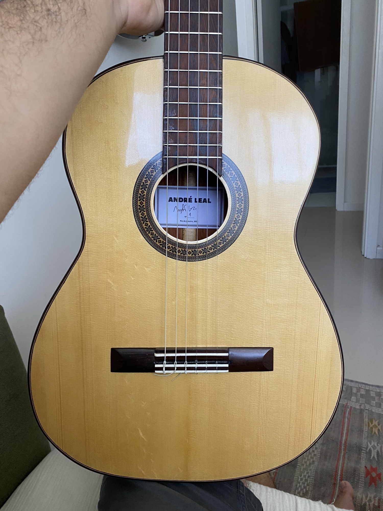
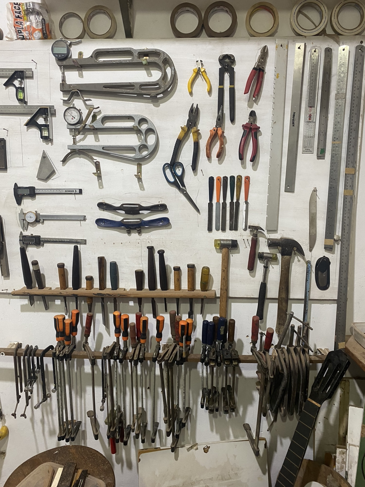
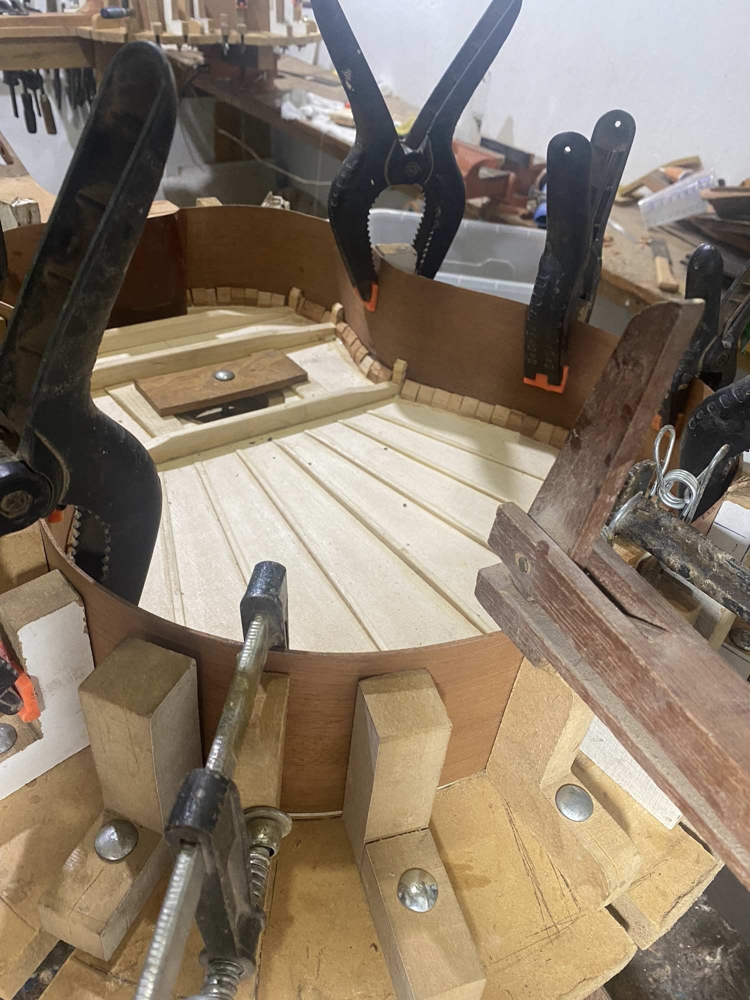
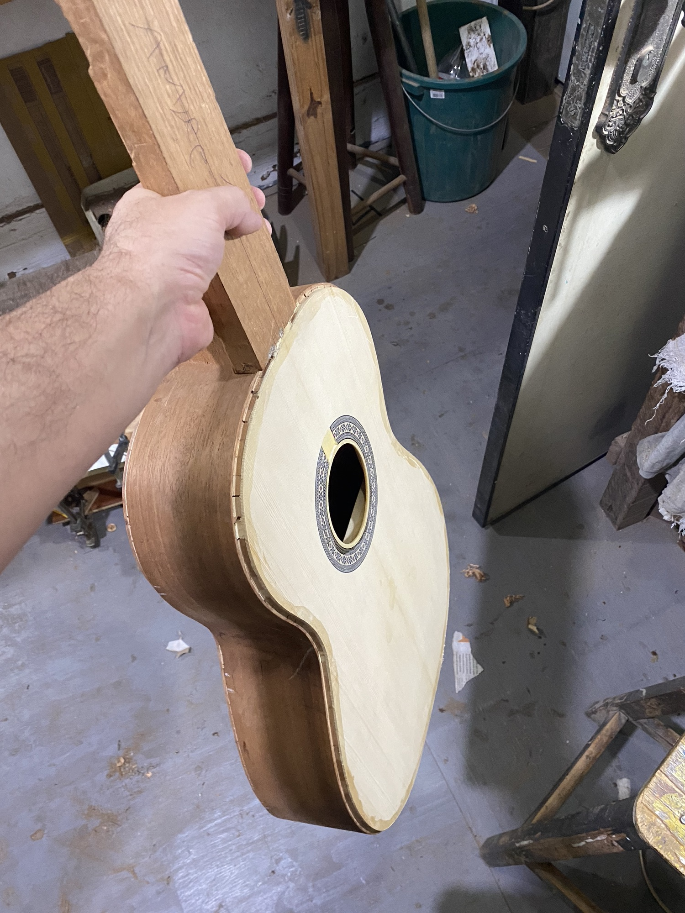
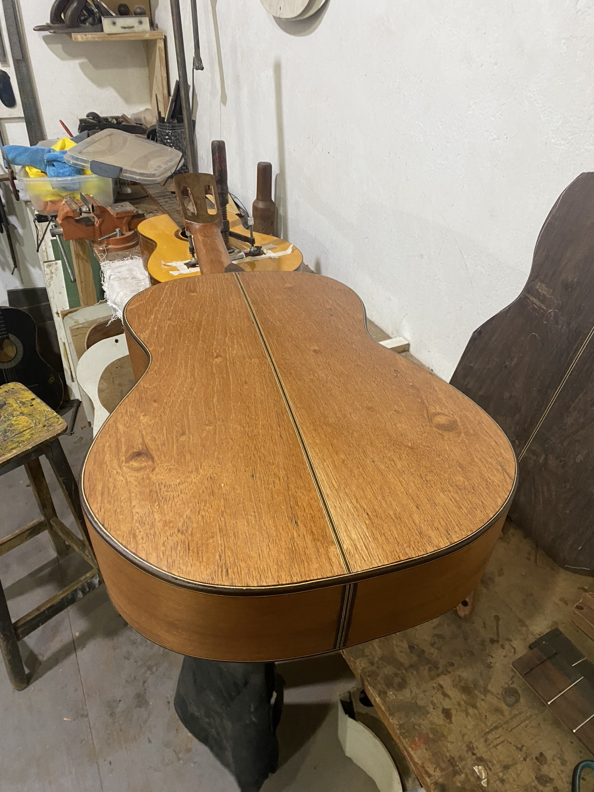
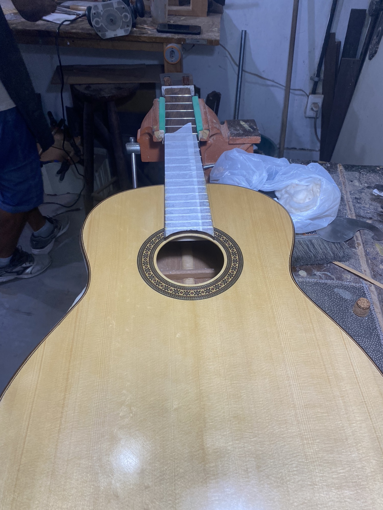

Personal Interests
Luthiery
Outside of design, I build classical instruments by hand. Every instrument starts as raw wood and takes months of bracing, bending, gluing and finishing before it makes a sound.
It is the slowest design process I know, and the one that taught me the most about patience and craft.

The Process
Guitar Nº 1, step by step




